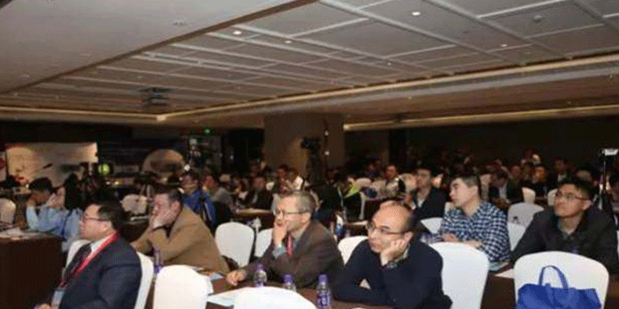

泉医生
关于我们
联系我们
个人中心
登录
/
注册
消息提醒
99
集团首页
ABOUT
骨科论坛
FORUM
在线问诊
ONLINE
名医风采
DOCTORS
战略合作
COOPRERATE
热搜:
骨折
医院
腰间盘
脑血栓
糖尿病
高血压
头疼
集团首页 ABOUT
最新资讯 INFORMATION

中国医学救援协会运动伤害分会遴选理事及青年委员通知
1分钟前
为规范提高我国应急管理、急救急诊的医学救援行业的整体水平，经国家民政部批准于 2008 年 11 月召开成立大 会，成立了中国医学救援协会，业务主管单位为卫生部。
中国医学救援协会运动伤害分会遴选理事及青年委员通知
1分钟前
为规范提高我国应急管理、急救急诊的医学救援行业的整体水平，经国家民政部批准于 2008 年 11 月召开成立大 会，成立了中国医学救援协会，业务主管单位为卫生部。
中国医学救援协会运动伤害分会遴选理事及青年委员通知
1分钟前
为规范提高我国应急管理、急救急诊的医学救援行业的整体水平，经国家民政部批准于 2008 年 11 月召开成立大 会，成立了中国医学救援协会，业务主管单位为卫生部。
中国医学救援协会运动伤害分会遴选理事及青年委员通知
1分钟前
为规范提高我国应急管理、急救急诊的医学救援行业的整体水平，经国家民政部批准于 2008 年 11 月召开成立大 会，成立了中国医学救援协会，业务主管单位为卫生部。
中国医学救援协会运动伤害分会遴选理事及青年委员通知
1分钟前
为规范提高我国应急管理、急救急诊的医学救援行业的整体水平，经国家民政部批准于 2008 年 11 月召开成立大 会，成立了中国医学救援协会，业务主管单位为卫生部。
中国医学救援协会运动伤害分会遴选理事及青年委员通知
1分钟前
为规范提高我国应急管理、急救急诊的医学救援行业的整体水平，经国家民政部批准于 2008 年 11 月召开成立大 会，成立了中国医学救援协会，业务主管单位为卫生部。
中国医学救援协会运动伤害分会遴选理事及青年委员通知
1分钟前
为规范提高我国应急管理、急救急诊的医学救援行业的整体水平，经国家民政部批准于 2008 年 11 月召开成立大 会，成立了中国医学救援协会，业务主管单位为卫生部。
中国医学救援协会运动伤害分会遴选理事及青年委员通知
1分钟前
为规范提高我国应急管理、急救急诊的医学救援行业的整体水平，经国家民政部批准于 2008 年 11 月召开成立大 会，成立了中国医学救援协会，业务主管单位为卫生部。
返回
1
2
3
4
5
6
7
...4065
下一页
到
页


 返回
返回